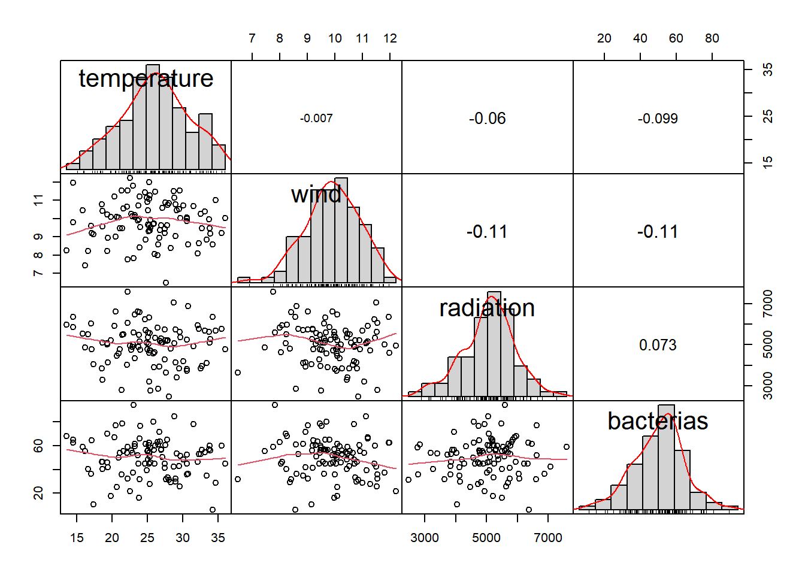
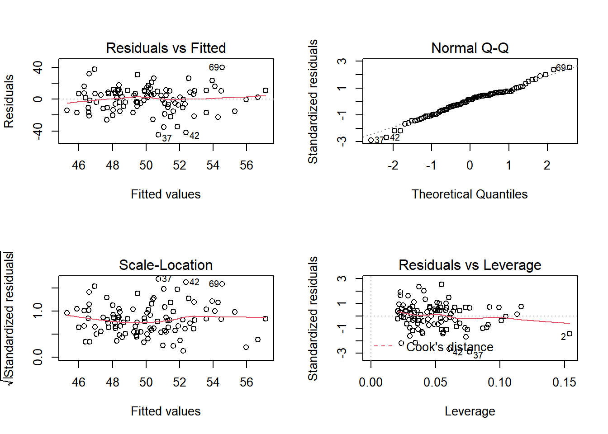

library(PerformanceAnalytics)
library(tidyverse)
library(psych)This week we will cover multiple linear regression. As in previous post and in any model that you want to do we will need to test our assumtions and follow some general steps
Procedure to perform Multiple Linear Regression:
Let’s have our data
set.seed(21) #so we get the same results even with a random selection
df<-data.frame(temperature=rnorm(100,mean = 25,sd=5),
wind=rnorm(100,mean = 10,sd=1.2),
radiation=rnorm(100,mean = 5000,sd=1000),
bacterias=rnorm(100,mean = 50,sd=15),
groups=c("Day","Night")) #groups
head(df,2)
## temperature wind radiation bacterias groups
## 1 28.96507 9.026934 5748.074 32.28645 Day
## 2 27.61126 6.467452 3630.011 31.57719 NightSimple linear regression does not require this test because it has one independent variable. In this chapter, we test linearity and independence of observations (autocorrelation) to determine that independent variables are not too hihgly correlated.
cor(df$temperature,df$wind) #function to test the relationship between your independent variables
## [1] -0.0069861We still need to lest the other two assumption before the model. A function that will save us time is chart.Correlation, we can get Marginal Response Plots showing correlations and the significance of those correlations (independency), histograms and distributions (normality), and bivariate scatter plot with a fitted line (linearity). Although this does not test the normal distribution you can observe with histograms the distribution of your data for all your numeric variables and make some initial stimations.
chart.Correlation(df[,-5], #numeric data set
histogram = T, #True show histograms
method = "pearson") #correlation method "pearson", "kendall", "spearman"
Similarly, with a few variables then you can use psych::corr.test and determine correlation and the significance. What we used for the correlation plot in week 1.
correlation.test <- psych::corr.test(df[,1:4],use = "pairwise",method = "spearman") #relationship between all your variables
my.correlation<-correlation.test$r # from the test get ($) the correlation values
p.values.correlation<-correlation.test$p # from the test get ($) the correlation p valuesfit.lm<-lm(bacterias~.,data=df) #all the variables
#fit.lm<-lm(bacterias~temperature+wind+radiation,data=df) same as before
summary(fit.lm)
##
## Call:
## lm(formula = bacterias ~ ., data = df)
##
## Residuals:
## Min 1Q Median 3Q Max
## -44.829 -10.180 2.138 10.238 39.795
##
## Coefficients:
## Estimate Std. Error t value Pr(>|t|)
## (Intercept) 68.119654 19.742062 3.450 0.000836 ***
## temperature -0.304967 0.317770 -0.960 0.339638
## wind -1.469393 1.474082 -0.997 0.321385
## radiation 0.000886 0.001674 0.529 0.597873
## groupsNight -0.544984 3.265375 -0.167 0.867805
## ---
## Signif. codes: 0 '***' 0.001 '**' 0.01 '*' 0.05 '.' 0.1 ' ' 1
##
## Residual standard error: 16.14 on 95 degrees of freedom
## Multiple R-squared: 0.0252, Adjusted R-squared: -0.01584
## F-statistic: 0.6141 on 4 and 95 DF, p-value: 0.6535Breakdown of the results elements:
The estimates (Estimate) column gives you the change in y cause by each element of the regression. For Intercept or the value of the y when all the rest elements are 0 in this case 68.12 bacteria units on each test.Similarly, temperature/rest of the variabels show changes in y (population of bacteria) with one unit increase in x. In other words, temperature in the full model reduces bacteria population by -0.304 units for each increment in temperature if P < 0.05. Here it isnt so we can not reach that conclussion.
The standard error of the estimated values in the second column Std. Error.
The test statistic t value.
The p-value Pr(>| t | ), the probability of finding the given t-statistic and therefore, the calculated estimate by chance.
We should ensure that the model fited meets this last assumption, same variance, to maintain the model. The error term needs to be the same across all values of the independent variables.
par(mfrow=c(2,2))
plot(fit.lm)
par(mfrow=c(1,1))Here we can see that the resudial erros are constant across groups and they are distributed evenly. Look at the Normal Q-Q (top right) which under homoscedasticity it should show points along the line.
Leverage h is a quantity solely depend on the predictors for all the cases in the data without any respect with responses. Leverage hi is called the leverage of observation i. It indicates the “pull” an observation has on the regression fit.
Let’s look at that pull for different points.
Cases with large leverages should be inspected to make sure there are not errors in the data or other problems. We will show some methods to deal with them in the following posts